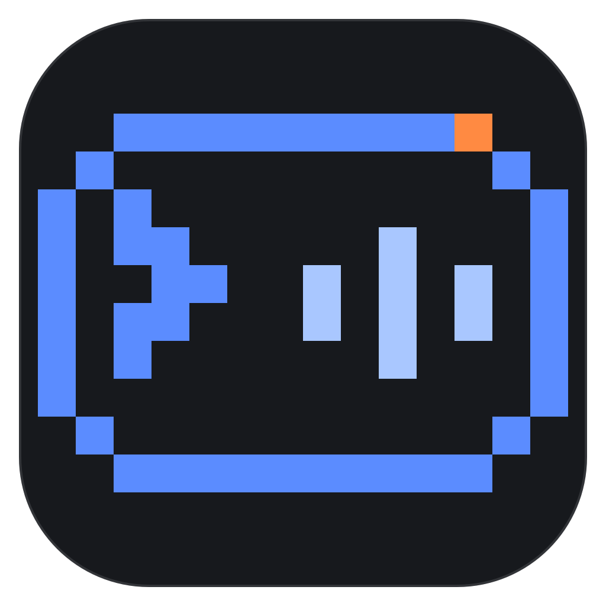

ISLAND HUD / VISUAL IDENTITY
OFFICIAL MARK · PIXEL CONSOLE

Island HUD
像素终端，一眼可见。
蓝色像素外框同时是终端窗口与悬浮岛；命令提示符代表开发者工作流，浅蓝波形呈现会话活动。右上角只保留一枚橙色回应灯，让待处理状态清晰而克制。
Terminal / 命令Signal / 状态反馈Response / 待回应
Small-size legibility / 小尺寸辨识度
16 px
24 px
32 px
48 px
64 px
96 px
保留完整圆角底座与大块像素轮廓；16 / 24 / 32 px 使用实际尺寸导出，Windows ICO 包含七档尺寸。
Core palette / 核心色
#5B8CFF
#A9C7FF
#FF8A42
#17191D
蓝色像素是统一基底；橙色仅用于回应灯。正式标识已应用于 README、设置页、托盘、窗口与打包资源。